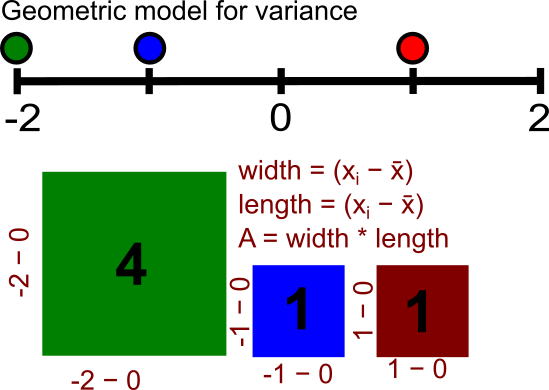
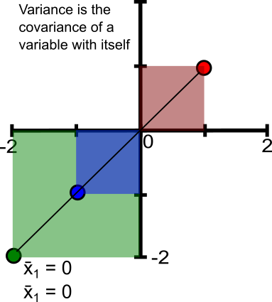
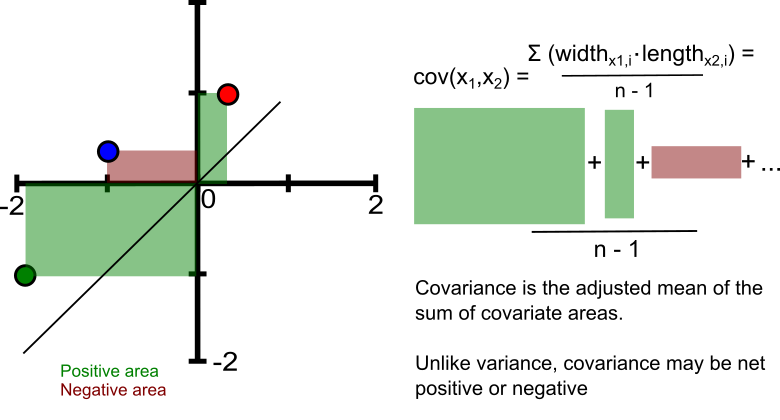

library(MASS)
library(ggplot2)
library(patchwork)
library(dplyr)
library(TeX)Session 3: Covariance
Variance continued
We saw last week how the variance and its square root derivative, the standard deviation \(\sigma\), represented the spread of data drawn from a normal distribution around its mean. Since population samples inevitably underestimate the true population variance, we explored the importance of dividing the square of differences of each value \(x\) from the sample mean \(\bar{x}\) (\(\sum_{i=1}^n (x_i - \bar{x})^2\)) by \(n-1\) , rather than \(n\).
Finally, you learned that variance is inherently scalable. The sample of a random variable can be transformed by centering the sample against the mean and dividing by the standard deviation. You would have already encountered this as z-transformation or z-scoring. This approach elegantly transforms datapoints into distances from the mean in units of \(\sigma\). We will see later how bivariate correlation is essentially the covariance between each variable after being z-scored.
Variance as a mean of squared differences
Another way to consider variance is as an adjusted (\(n-1\)) mean of squared differences. This intuition will be helpful as we come to discuss covariance. Create a vector of 50 samples drawn from a normal distribution with a mean of 0 and standard deviation of 1. Is this sample already z-normalized?
sample1 <- tibble(values = rnorm(n,mean,sd))
Now create a function that creates a new column in your data calculated by taking the difference of each point from the empirical sample mean (i.e. not the true mean of 0). Within your function, sort the values in ascending order.
calc_diff <- function(data) {
data |> mutate(
diff = values - mean(values)
) |> arrange(values)
}
Excellent! Now pass the sample through your function. Before we plot the output, what do you expect to see?
sample_diff <- calc_diff(sample1)
plot_sorted <- function(data,var1,var2) {
ggplot(sample_diff,aes(x = 1:length({{var1}}), y = {{var2}})) +
geom_point() +
geom_line() +
labs(x = "Sorted index", y = "Difference from empirical mean") +
theme_minimal()
}
sample_diff |> plot_sorted(values,diff) Now insert a line into the ggplot code that plots a vertical line approximately at the x-intercept (i.e. when y = 0). What value does this index correspond to (Hint: use indexing)? Now create a new column in the tibble that takes the square of the differences.
sample_diff |> mutate(
squared = (diff)^2
) |> arrange(squared) -> sample_diff
Plot these transformed data as you did the non-squared differences.
vars <- sample_diff |> summarize(sumsquares_n = sum(squared)/n(), sumsquares_n1 = sum(squared)/(n()-1))
p1 <- sample_diff |> plot_sorted(values, squared)
Sum the squared differences and divide by \(n\) and \(n-1\) (hint: summarize()). Now overlay horizontal lines at these values (geom_hline) onto the previous plot using ggplot’s additive syntax. This visualization should reinforce that variance is simply an adjusted mean of squared differences from the mean, at which point the difference is 0 (i.e. when the derivative of the quadratic equation of squared differences \(y = (x-\bar{x})^2\) equals 0).
#| exercise: e4
p1 + +
Covariance intuition
So how does this help understand covariance? Simply, covariance reflects the degree to which two variables share a similar spread around their respective means. Let’s call these variables \(x_1\) and \(x_2\). To understand this critical concept, let’s use a geometric model of variance/covariance.

In the above figure, three values are sampled from a normal distribution with a mean of 0. To calculate the variance, we take the squares of the difference of each value against the mean and then sum these together, dividing by \(n-1\). This essentially means dividing the summed the area of squared differences and dividing by \(n-1\). For univariate distributions, the resulting differences are squares, with lengths of equal sides. We could also plot this as below:

A rather uninteresting plot where \(x_1\) is regressed against itself. All points lie along the line and the resulting differences of \(x_1\) against its mean yields square differences. Now we consider a few points from a sample taken from two variables, \(x_1\) and \(x_2\):

Instead of equal sides, each quadrilateral now has sides equal to each point’s difference from the means of each variable. Of course, the order of width and length is unimportant. When both differences are positive or negative, the resulting area is positive (green rectangles). Failing which, it is negative. Conversely, all squares of variance were necessarily positive! Like before, when we sum these areas together, we’ll then divide by \(n-1\). If the total positive area were equal and opposite to the negative area, the variables would have 0 covariance, namely, no relationship. Alternatively, a net negative area would imply an inverse relationship. Let’s visualize this concept more clearly by creating two normally distributed random variables. Start by using a \(\rho\) of 1
multivar <- function(n,rho,mu1,mu2) {
Sigma <- matrix(c(1, rho, rho, 1), 2, 2)
dat <- as.data.frame(MASS::mvrnorm(n, mu = c(mu1,mu2), Sigma = Sigma))
names(dat) <- c("x1", "x2")
mx1 <- mean(dat$x1); mx2 <- mean(dat$x2)
dat <- dat %>%
mutate(
dx1 = x1 - mx1,
dx2 = x2 - mx2,
contrib = dx1 * dx2,
sign = ifelse(contrib >= 0, "Positive", "Negative"),
area = contrib,
x1min = pmin(x1,mx1),
x2min = pmin(x2,mx2),
x1max = pmax(x1,mx1),
x2max = pmax(x2,mx2)
)
return(dat)
}
rho <- 1
dat <- multivar(50,rho,0,0)What does multivar do? What do \(mu_1\) and \(mu_2\) correspond to? What about rho? Using the function, create a dataset with two random variables with a mu of 0. The standard deviation is normalized to 1. Let’s now plot the areas for this bivariate distribution.
plot_recs <- function(data) {
p1 <- ggplot(data) +
geom_rect(aes(xmin = x1min, xmax = x1max, ymin = x2min, ymax = x2max, fill = sign),
alpha = 0.35, color = NA) +
geom_point(aes(x1, x2), size = 1.2, alpha = 0.85) +
geom_vline(xintercept = mean(data$x1), linetype = "dashed") +
geom_hline(yintercept = mean(data$x2), linetype = "dashed") +
coord_equal() +
scale_fill_manual(values = c(Positive = "#2ca02c", Negative = "#d62728"),
name = "Contribution") +
labs(
title = "Covariance",x = TeX("$x_1$"),y = TeX("$x_2$")) +
theme_minimal()
p1
}
dat |> plot_recs()
Change the value of rho and see what happens. Each time you do, take the sum of dat$area. Of course, we’re generating the data each time, so even when rho is constant, the area will change every time. For each value of rho, run the code block a few times. Try negative values of rho too. What do you see when rho = {1, -1}?
dat <- multivar(50,1,0,0)
area_sum <- dat |> summarize(sum(area)) |> print()
dat |> plot_recs()
When rho = 0, what would you expect the covariance to be if you sampled the population? Let’s compare the sample covariance using R’s cov() versus dividing the total area by n-1.
# Covariance
cov_x1x2 <- cov(dat$x1, dat$x2)
cov_x1x2
# vs area
av_area <- area_sum/(nrow(dat)-1)
av_areaJust like before, this can be visualized by seeing how each area contributes to the overall covariance. The more symmetrical the areal contributions there are (i.e. positive and negative values, the smaller the covariance).
#
dat_sorted <- dat %>%
arrange(contrib) %>%
mutate(idx = row_number())
##
p1 <- ggplot(dat_sorted, aes(x = idx, y = contrib, fill = sign)) +
geom_col(alpha = 0.7) +
geom_hline(yintercept = cov_xy, linetype = "dashed", color = "black", size = 1) +
scale_fill_manual(values = c("Positive" = "#2ca02c", "Negative" = "#d62728")) +
labs(
title = "Contributions sorted by value",
subtitle = "Dashed line = sample covariance",
x = "Rectangles (sorted)", y = "Contribution"
) +
theme_minimal(base_size = 12) +
theme(legend.position = "none")
##
dat_sum <- dat %>%
group_by(sign) %>%
summarise(total = sum(area), .groups = "drop")
##
p2 <- ggplot(dat_sum, aes(x = 1, y = total, fill = sign)) +
geom_col(position = "identity", alpha = 0.7) +
scale_fill_manual(values = c("Positive" = "#2ca02c", "Negative" = "#d62728")) +
labs(
title = "Summed areas",
subtitle = "Green = Additive, Red = Subtractive",
x = NULL, y = "Total area"
) +
theme_minimal(base_size = 12) +
theme(
axis.text.x = element_blank(),
axis.ticks.x = element_blank(),
legend.position = "none"
)
p1 + p2
Negative areas pull the covariance towards 0. Try changing different values of rho and seeing the output.
A fundamental concept of (co)variance is that it is scalable. It is infeasible to compare one covariance with another when you’re dealing with different scales of data. For example, how would the covariance of a variable change with differently scaled version of itself? Let’s try drawing a sample of 50 values from a normal distribution with a standard deviation of 1 and mean of 0 and then rescale this sample to have a standard deviation of 4:
univar_rescale <- function(n,scale,mu,sd) {
sample <- tibble(x1 = rnorm(n,mu,sd)) |>
mutate(x2 = scale * ((x1 - mean(x1)) / sd(x1)))
return(sample)
}Plot the result
#| exercise: e6
sample <- univar_rescale(n=100,scale=4,mu=0,sd=1)
ggplot()Try changing the scale, mean and standard deviation. What do you notice about the gradient of values? Could you derive an equation for this line? If you’re not sure, let’s add a few lines to the plot below.
ggplot(sample2,aes(x = x1, y = x2)) +
geom_point() +
geom_hline(yintercept = mean(sample2$x2),color = "blue", linetype = "dashed") +
geom_hline(yintercept = mean(sample2$x2) + sd(sample2$x2),color = "blue", linetype = "dotted") +
geom_hline(yintercept = mean(sample2$x2) - sd(sample2$x2),color = "blue", linetype = "dotted") +
geom_vline(xintercept = mean(sample2$x1),color = "red", linetype = "dashed") +
geom_vline(xintercept = mean(sample2$x1) + sd(sample2$x1),color = "red", linetype = "dotted") +
geom_vline(xintercept = mean(sample2$x1) - sd(sample2$x1),color = "red", linetype = "dotted") +
theme_minimal()
You’ll now see that for a variable regressed against a rescaled form of itself, that the line represents the ratio of \(\sigma\) (or variances) of the two variables: \(\frac{\sigma(x_2)}{\sigma(x_1)}\). This leads us to an important concept StatQuest’s video on covariance covered: variance and covariance are scalable. Let’s calculate the variance for a number of different transformations. We’ll print out the variance for each transformation.
univar_rescale <- function(n, scales, mu, sd) {
sample <- tibble(x1 = rnorm(n, mu, sd))
c <- 2
for (s in scales) {
col_name <- paste0("x", c) # Create a dynamic column name
sample <- sample |>
mutate(!!sym(col_name) := s * ((x1 - mean(sample$x1)) / sd(sample$x1)))
c <- c + 1
}
vars <- sapply(sample,var)
print(vars)
return(sample)
}How does the variance change? Let’s do something similar with two independent variables. Try changing the multiplier and inspect the covariance. What do you notice?
dat <- multivar(50,0.5,0,0)
dat$x2 <- dat$x2 * 1
cov(dat$x1,dat$x2)As we saw when we regressed a variable against its scaled self, the sum of the area of each rectangle increases with the transformation coefficient, despite sharing the same relationship.
Correlation
This is where correlation enters the scene. While variance is scalable, correlation values always lie between -1 and 1. Correlation normalizes the covariance against the product of the variances. Let’s break down the equation for covariance and correlation:
\(cov(x_1,x_2) = \frac{\sum_{i=1}^n (x_{1,i} - \bar{x_1}) \cdot (x_{2,i} - \bar{x_2})}{n-1}\)
\(corr(x_1,x_2) = \frac{cov(x_1,x_2)}{\sqrt{var(x_1) \cdot var(x_2))}}\)
Another way to think about this is that for each rectangular area, we divide it by the product of standard deviations: \(\frac{(x_{1,i} - \bar{x_1}) \cdot (x_{2,i} - \bar{x_2})}{\sigma(x_1) \cdot \sigma(x_2)}\). Once we’ve accounted for scaling, we take the adjusted average by dividing by \(n-1\).
Geometrically, this tells us that if we form rectangles by pairing each difference from the mean of \(x_1\) with the corresponding difference from the mean of \(x_2\), then no arrangement of signs and magnitudes can produce a total summed area larger (in absolute value) than the product of the standard deviations. Why standard deviations and not variances? Because variance is already in square units. The product of sd gives us the maximum possible mean area assuming the two variables were perfectly correlated (or anticorrelated). Think of it again as a rectangle with \(A = \sigma(x_1) \cdot \sigma(x_2)\).
This yields an important consequence summarized by the Cauchy-Schwarz inequality: the covariance of two random variables can only ever be less than or equal to the product of the standard deviation of each variable. When the covariance = variance, the two variables are identical and equally scaled. Since the denominator will always change depending on the scaling of the two standard deviations, it will always be an upper bound on covariance:
\[ |\operatorname{Cov}(X,Y)| \leq \sqrt{\operatorname{Var}(X)} \cdot \sqrt{\operatorname{Var}(Y)}. \]
The only configuration that yields the maximum possible sum occurs when every point lies perfectly along this straight line. In this case, the denominator tells us that the rectangles are squares rescaled by a constant, and every area contributes positively, i.e. variance of a variable.
This explains why plotting \(x_1\) against a rescaled form of itself always produces a line of slope \(\sigma(x_2) / \sigma(x_1)\): the covariance in this case is equal to the product of the standard deviations, which is the upper bound permitted by the Cauchy–Schwarz inequality.
The geometric approach of rectangles showcases not just how positive and negative areas are combined, but also why only when two variables align perfectly along a linear scaling do we achieve the maximal sum of areas. It also indicates why correlations always yield values between -1 and 1. Let’s end with an example of this below.
Let’s simulate some data for \(x_1\) and \(x_2\) and change the scale of \(x_2\). You’ll see the covariance increase with scale but never exceed the bound. The correlation approaches the true value of 0.6. Try changing this value for yourself
#| exercise: e7
cov_bound <- function(n, scale,...) {
set.seed(6342)
dat <- multivar(n,...)
dat$x2 <- dat$x2 * scale
bounds <- dat |> summarize(
scale = scale,
cov_x1x2 = cov(x1,x2),
bound = sqrt(var(x1) * var(x2)),
corr = cov_x1x2 / bound
) |> tibble()
return(bounds)
}
# Try a few scales
results <- purrr::map_dfr(c(0.5, 1, 2, 4), ~cov_bound(1000, .x, rho=0.6,mu1=0,mu2=0))
results